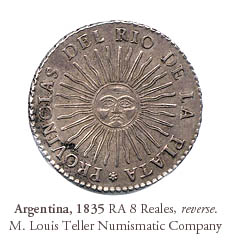
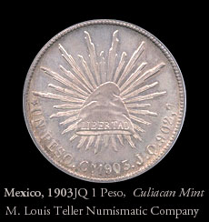
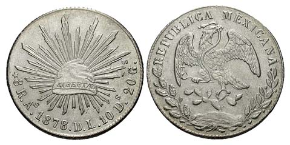
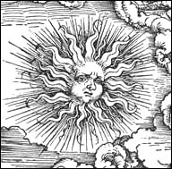

 

The Query
June 22, 2003
As you maybe know the Argentina’s flag has a sun of 32 rays. The design of this sun
appeard for the first time in a coin of 1813.
Some historians says that this "argentine" sun is INTI an Inca’s god, the principal
one.
But the design is equal to a sun engraved in a medieval armor of Metropolitan Museum.
I found a similar suns in Durer engravings and in the Saliba’s map of XVI century!!!
Can you tell me something about this sun in this medieval armor, please? How is
possible that this sun is identical to Argentina’s sun?
XXXX
México D.F.
The Answer
The symbol, a sun face with rays, appears in
Europe long before the 1813 minting of the Argentine coin. The symbol is, or can be,
the supreme being, master of the universe, God.
We might except to see the symbol on the breast plate of a rich man’s decorative armor,
perhaps placed over the heart.
You mentioned "Saliba’s map of XVI century." In 1582, Antonio Saliba produced a
cosmological chart with a number of the symbols. (Interestingly, in 1582 Pope Gregory
XIII ordered some changes in the then current calendar and so the Gregorian Calendar
came into being. Could Saliba been inspired by the Pope?) In any case, none of Saliba’s
suns have thirty-two rays.
Durer did a woodcut that had both a sun symbol and a moon symbol. ("The Revelation of St
John: 5. Opening the Fifth and Sixth Seals," ca 1497-98.) In this case, the sun did not
have thirty-two rays.

The Revelation of St John: 5.
Opening the Fifth and Sixth Seals
Albrecht Durer, 1497-98
So what I see is that the examples that you give are not identical to Argentina’s sun.
What you would need to do is to find a pre-Spanish Inca image of Inti to prove that
image on the coin is really is of Inca origin.
Since we know that sun symbol appeared in Europe at least 200 years before the 1813
minting, it is possible the coin’s designers were influenced by European design.
The most intriguing part of the design is the thirty-two rays. While that may just have
been a chance occurrence, it is possible that the number "thirty-two" was used since its
connection to Freemasonry. There are thirty-two degrees in Freemasonry. Masonry has many
symbols, some even appear on U.S. money.
Jose de San Martin was of course a Mason.
|